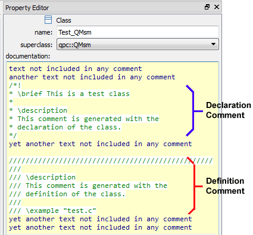

Generating Code for State MachinesConditional Compilation
Even though the code generated by QM is not intended to be edited manually outside QM, it still needs to be understood and debugged using a traditional source-level debuggers.
Also, some engineering organizations require all code, including auto-generated code, to comply with the internal coding standards. Such standards often dictate very specific commenting style, like provision of special file comments, function comments, variable comments, etc.
To enhance the readability of the generated code and to meet the special commenting style requirements, QM can emit several kinds of various comments, all described in the following sections.
Top-Level File Comment
At the top of each generated file, QM generates a top-level comment, which has two purposes:
- to remind the reader right away that this file is generated automatically and should not be changed manually, as any such changes will be lost when the file is re-generated from the model.
- to inform the reader about the licensing terms applying to the generated code, which are the same as the underlying QP Framework, as explained in the section Licensing the Generated Code.
- Note
- If you wish to add some additional comment at the top of your file, you can always put such a comment in the original file-item, which QM will then copy over to the file on disk immediately after the top-level comment described here.
QP Used Under GPL
The following snippet of code shows the top-level file comment in the case when the underlying QP Framework is used under the open-source GPL license↑:
QP Used Under a Commercial License
The following snippet of code shows the top-level file comment in the case when the underlying QP Framework is used under a commercial Quantum Leaps license↑:
Generating Comments from Documentation
QM allows you to generate comments from the documentation property that is available in many model items, such as classes, attributes, operations, and states.
- Note
- The feature of generating comments from documentation has been primarily designed to help organizations comply with the specific commenting style imposed by their internal standards.
The following screen shot shows an example of the documentation property that generates comments. Specifically, the example generates a comment with the declaration of the class as well another comment with the definition of the class.

Comments in the Documentation Property
The QM code generator uses the following algorithm to generate comments from the documentation property:
- The documentation text is searched for a comment, whereas both the C-style comments (/
*...*/) and C++-style comments (//) are allowed. If no comment is found, the documentation property generates no comments. (NOTE: Any comments in the documentation property are clearly indicated by syntax highlighting);
- The first comment found is considered to pertain to the declaration and is generated with the declaration of the model item;
- The second comment found is considered to pertain to the definition and is generated with the definition of the model item;
- If only one comment is found, the comment is considered to pertain to both declaration and definition of the model item. In this case this (same) comment is generated with the declaration and with the definition of the model item.
- All other text in the documentation property preceding or following comments has no implications for code generation. Such text is considered internal model documentation.
- Note
- As illustrated in the screen shot above, the comments in the documentation property can contain special markup, such as Doxygen↑, Doc++↑, RoboDoc↑, etc.
Model-Link Comments
QM generates also comments that contain the model-links. These model-link comments have a generic form: /* ${<fully-qualified-name>} */, where <fully-qualified-name> is the Fully-Qualified Item Name of the referenced item. The following code snippet provides several examples of model-reference comments at lines [1-4]:
[1]
static QState Missile_flying(Missile * const me, QEvt const * const e) {
QState status_;
switch (e->sig) {
[2]
case TIME_TICK_SIG: {
[3]
if (me->x + GAME_MISSILE_SPEED_X < GAME_SCREEN_WIDTH) {
me->x += GAME_MISSILE_SPEED_X;
ObjectImageEvt *oie = Q_NEW(ObjectImageEvt, MISSILE_IMG_SIG);
oie->x = me->x;
oie->y = me->y;
oie->bmp = MISSILE_BMP;
QACTIVE_POST(AO_Tunnel, (QEvt *)oie, me);
status_ = QM_HANDLED();
}
[4]
else {
static QMTranActTable const tatbl_ = {
&Missile_armed_s,
{
Q_ACTION_CAST(0)
}
};
status_ = QM_TRAN(&tatbl_);
}
break;
}
. . .
The model-link comments ([1..4] in the listing above) allow you to quickly open the linked model item as the Current Item in QM To do so, you only need to:
- Select a piece of code containing the desired model-link comment and copy it into the Clipboard (Ctrl-C), which you can do from virtually any code editor or debugger.
- Next, click on QM tool and click the button or just press F5 (see Edit Toolbar and Edit Menu)
Divider Comments
Finally, to improve readability of the generated code, QM generates divider comments to visually separate various sections of code, as illustrated in the following snippet of generated code (lines [1-3]):
[1]
void Missile_ctor(void) {
Missile *me = &l_missile;
QMActive_ctor(&me->super, Q_STATE_CAST(&Missile_initial));
}
[2]
[3]
static QState Missile_initial(Missile * const me, QEvt const * const e) {
static QMTranActTable const tatbl_ = {
. . .
The divider comments ([1..3] in the listing above) often contain the Fully-Qualified Item Name of the model item that follows, so you can use the divider comments to quickly open the referenced model item as the Current Item in QM, as described in the previous section Model-Link Comments.
Generating Code for State MachinesConditional Compilation